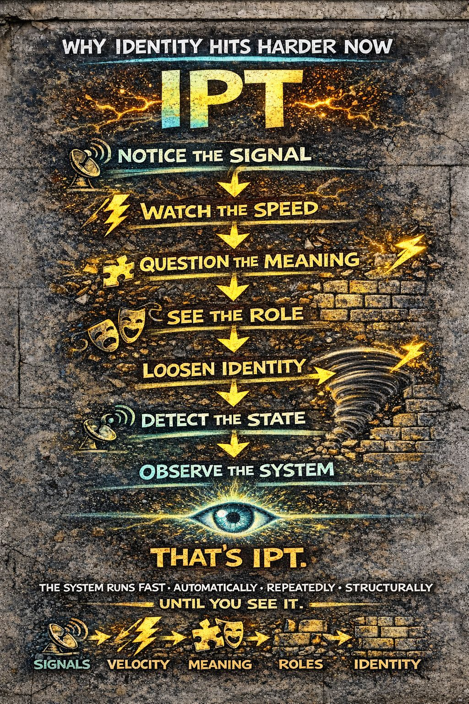

🧠 Full System Summary
⚡ Watch the speed
🧩 Question the meaning
🎭 See the role
🧱 Loosen identity
🌪 Detect the state
👁️ Observe the system
📡 System Skills
📡 Signal Recognition
detect what hits before it becomes anything
⚡ Velocity Awareness
notice how fast it’s moving through you
🧩 Meaning Check
question the first interpretation
🎭 Role Awareness
see which version of you is activating
🧱 Identity Flexibility
recognize patterns without locking into them
🌪 State Detection
identify when you’re being pulled or overloaded
👁️ Observation
watch the system while it runs
🧠 Full System Summary
It’s about seeing how beliefs form.
Every experience moves through a chain:
it accelerates
it becomes meaning
you adjust to it
it repeats
it becomes identity
Most of this happens automatically.
Invisible.
Unquestioned.
🔥 Modern Amplification
Modern environments amplify it:
- more signals
- faster delivery
- stronger social pressure
- constant feedback loops
and reacts harder.
👁️ The IPT Difference
IPT doesn’t interrupt the world.
By shifting awareness earlier in the process, you:
- see signals before stories
- feel speed before certainty
- question meaning before it locks
- notice roles before you become them
- hold identity loosely instead of defending it
- detect states before they take over
🔥 Core Idea
You need visibility into how beliefs happen.
🧱 Final Distillation
⚡ Fast
🧩 Automatically
🎭 Repeatedly
🧱 Structurally
And once you see it…
but it can’t fully run you anymore
⚡ Watch the speed
🧩 Question the meaning
🎭 See the role
🧱 Loosen identity
🌪 Detect the state
👁️ Observe the system
What you don’t see… forms you.